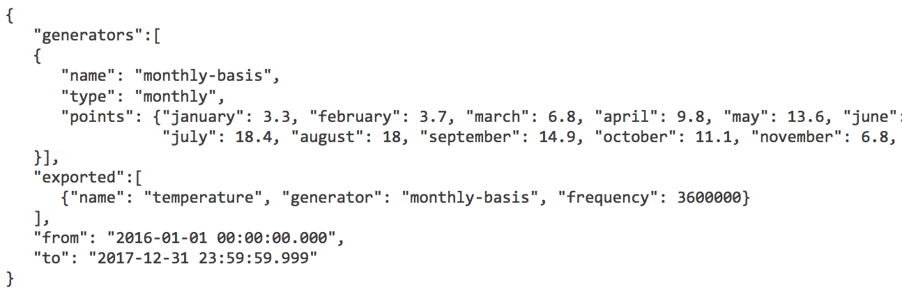
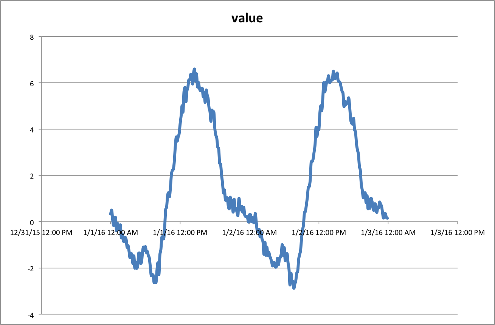
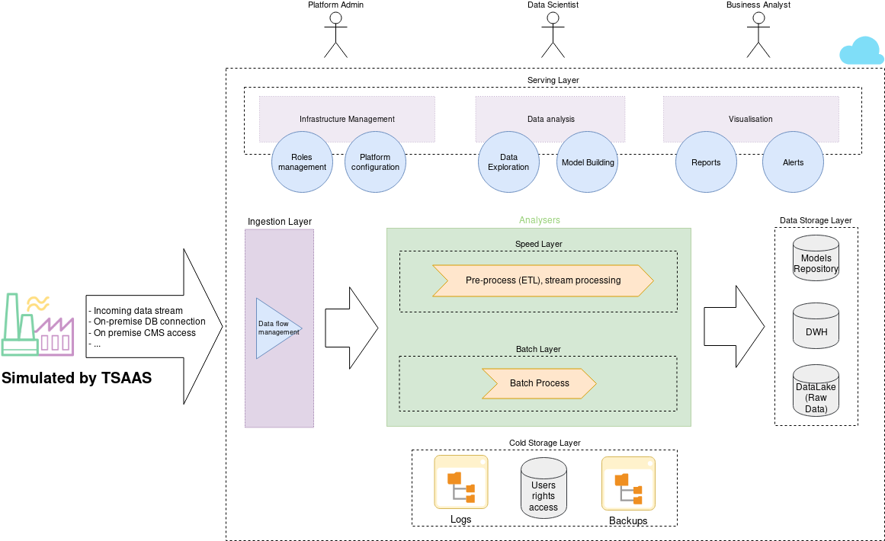
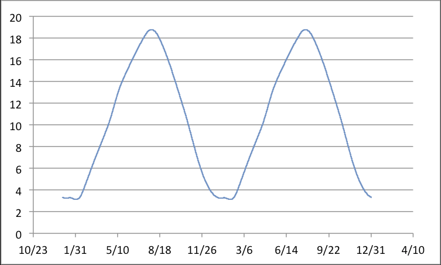
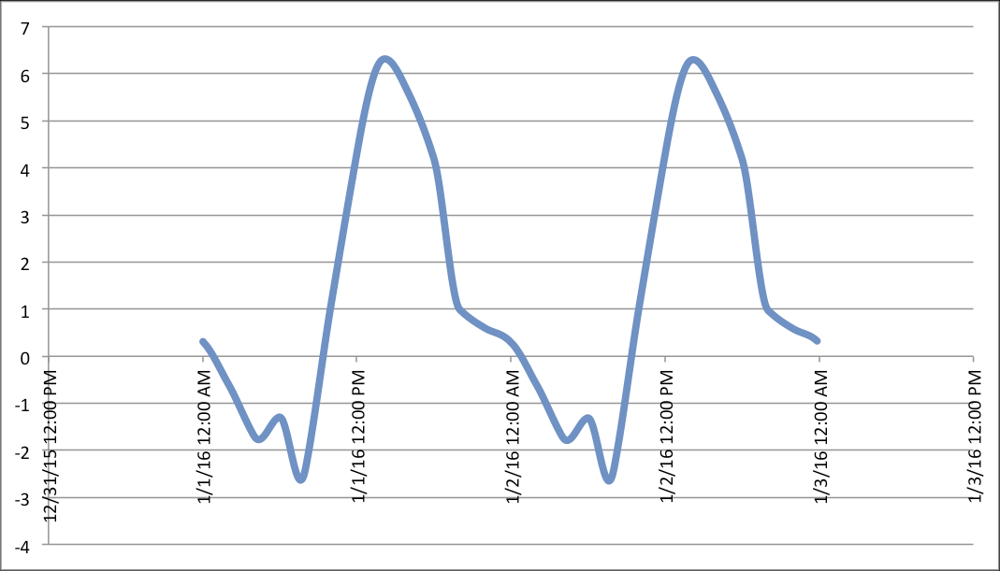

TSimulus Presentation
An opensource realistic time series generator
Alexandre Nuttinck
CETIC Avenue Jean Mermoz 28, 6041 Charleroi
23-03-2019
Summary
TSimulus
TSAAS
Demo
TSimulus
An opensource realistic time series generator made at CETIC.|
Alexandre Nuttinck TSimulus Contributor |
Mathieu Goemine TSimulus Creator |
TSimulus
Origins
- EAM-SDI: research project with Guardis.
- Specific area of automatic infrastructure management.
- Collect data of cpus, fans, ...
- Monitoring, take reactions against events.
- Problem: lack of real data and in real time.
- The solution was to simulate a large number of sensors gathering information from a collection and analysis system.
TSimulus
What is TSimulus?
TSimulus (formally, RTS-Gen) is a tool for generating random, yet realistic, time series values.
Time series?
- An ordered sequence of points in time, each of them is associated with at most one value.
- Timestamp → value (typically, real).
- example: 2018-03-12T14:00:00.000 - 20°C
- Used in a wide variety of fields.
Random but realistic?
- Convincing noise.
- Models, patterns.
TSimulus
How TSimulus works?
|
In input A DSL that describes "the look" of the timeseries Cycles (daily, weekly) Noise (white, ARMA) combinations conditions |
In output triplets (series, timestamp, value) |
TSAAS ~ TSimulus as a Service
TSimulus as Sensors simulator
- TSimulus is now used as a (load) testing tool to simulate sensors,
- generate data and
- send it to the Big Data Platform,
- in order to test the different components of the Platform.
TSAAS ~ TSimulus as a Service
TSimulus as Sensors simulator
I'm a video, you can play me ! ;)
Demo - A first generation
For your first generation of time series, we will specify a generator that propose a basic external temperature simulator for Uccle, Belgium.
- TSimulus Microservice is available here: http://tsimulus.openshift.cetic.be.
- The configuration file: https://raw.githubusercontent.com/cetic/tsimulus/master/examples/get_started_1.json.
- Let's make a POST request on http://tsimulus.openshift.cetic.be/generator.
Demo - A first generation
Demo - Towards a more realistic model
Ok it works!
- The temperature varies constantly, and towards the middle of the month, we obtain the values that we have specified.
- But, the values are far too regular. It's not realistic.
- The temperatures vary according to the time of day.
- https://raw.githubusercontent.com/cetic/tsimulus/master/examples/get_started_2.json.
Demo - Towards a more realistic model
Demo - Towards an even more realistic model
Not yet totally realistic!
- The temperature varies during the years due to the complex modifications of atmostpheric conditions.
- To do this, let's add some noise to our generator.
- https://raw.githubusercontent.com/cetic/tsimulus/master/examples/get_started_3.json.
Demo - Towards a more realistic model
|
Aéropole de Charleroi-Gosselies Avenue Jean Mermoz 28 B-6041 Charleroi - Belgique
|
Thanks!Questions?Code source: https://github.com/cetic/TSimulus Documentation: http://tsimulus.readthedocs.io Try it on: http://tsimulus.openshift.cetic.be/generator
|